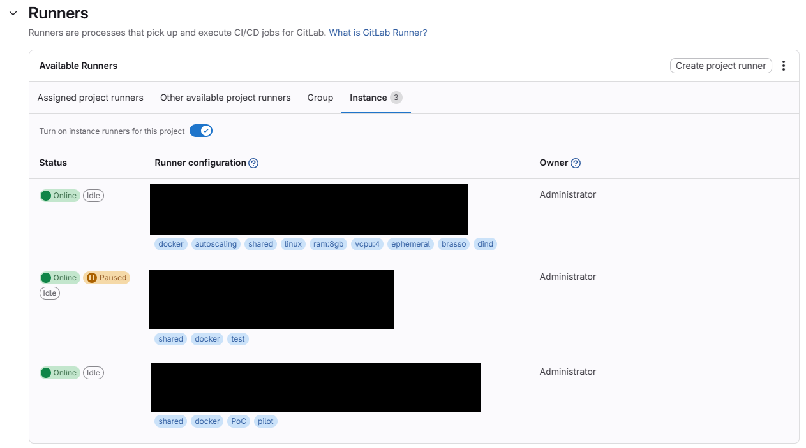
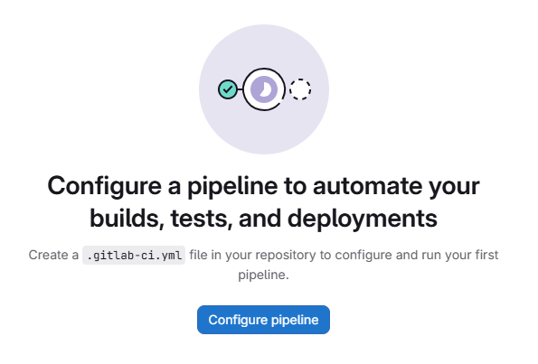
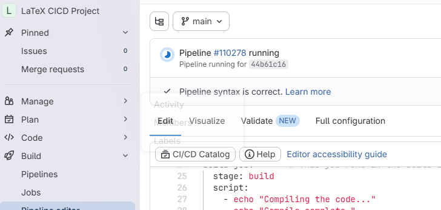
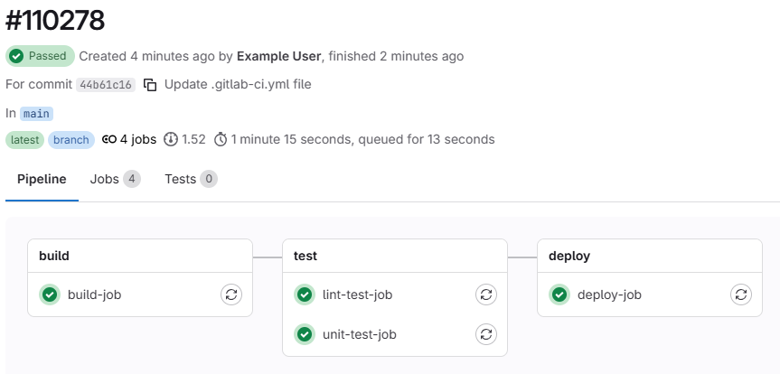
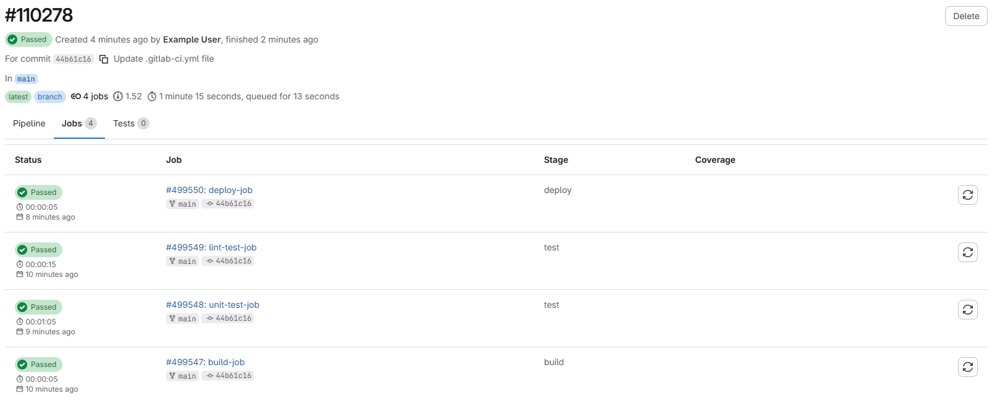
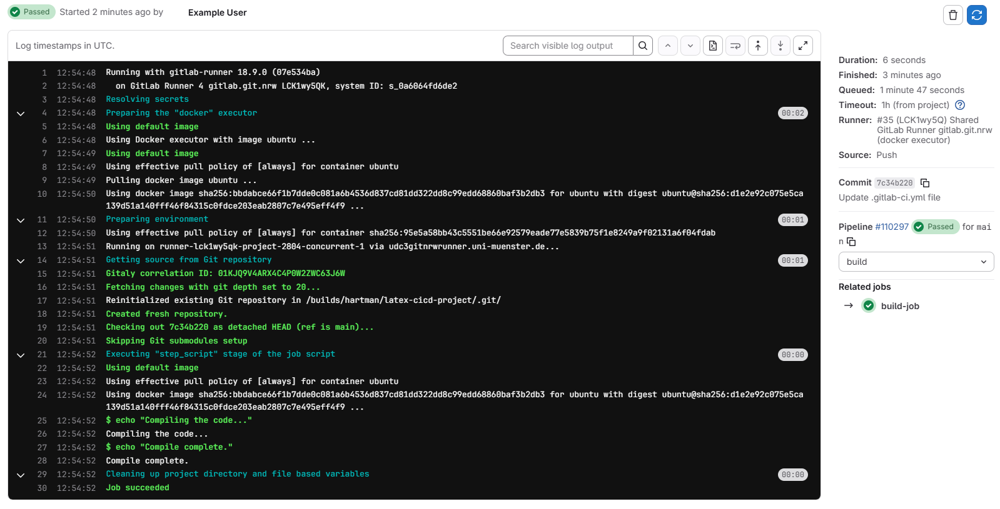
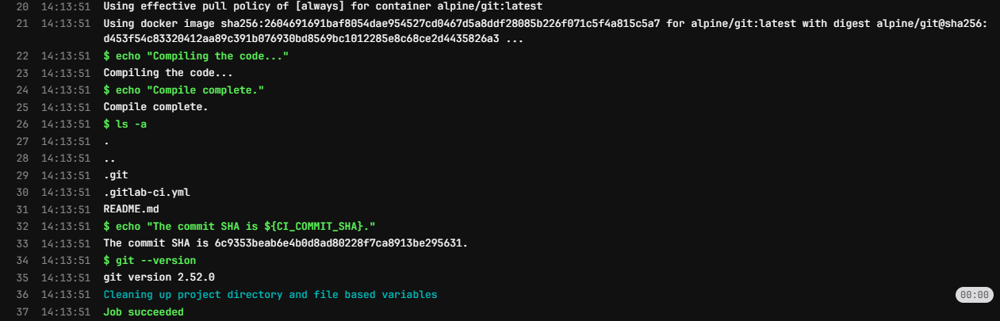
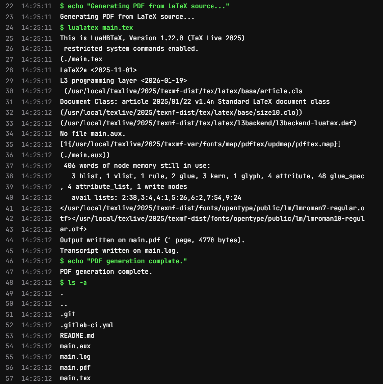

Content from Setting up our Project
Last updated on 2026-03-02 | Edit this page
Overview
Questions
- Where do we put our project files?
Objectives
- Create a GitLab Repository for our project
Creating a new GitLab Repository
Log in to GitLab and create a new repository for your project. Give it a name that reflects the project - something like “LaTeX CICD Workshop”. You can accept all of the default settings.
What is CI/CD?
CI/CD stans for “Continuous Integration/Continuous Deployment”. It is intended as a way to automate the process of building and deploying software. However the ability of CI/CD to run code and deploy output files makes is a powerful tool for many different kinds of automation projects. In this workshop, we are going to create a CI/CD pipeline that will build a LaTeX document from a source file and deploy the output PDF to a static URL.
If you are familiar to GitHub, you might have head of “GitHub Actions”. GitHub Actions is a CI/CD tool built into GitHub which serves a very similar function to GitLab’s CI/CD. Actions uses a different syntax and has a different set of features than GitLab CI/CD. You could potentially use GitHub to accomplish the same thing we are doing in this workshop, but we will not be covering that here.
How does CI/CD work?
There are two things abou GitLab CI/CD that are important to understand before we get started:
- We will define in our project the commands we want to run in our pipeline
- GitLab will run those commands in a “runner” which is a virtual machine that is assigned to our project.
Check that you have a runner assigned to your project before we get started. You can do this by going to your project, clicking on “Settings” and then “CI/CD”. Scroll down to the “Runners” section and look at the “Available Runners”. There are four tabs here:
- Assigned Project Runners
- Other Available Project Runners
- Group
- Instance
Depending on your GitLab instance, you may have access to runners in any of these categories. If you do not have access to any runners, you will not be able to complete the exercises in this workshop.

The .gitlab-ci.yml file
In GitLab, there is a particular file that we use to define the
commands that will run in our pipeline. This file is called
.gitlab-ci.yml and it must be located in the root directory
of our project. The syntax of this file is a little bit tricky, but we
will go through it step by step.
To start, in your project’s sidebar, go to the “Build” section and
select “Pipeline Editor”. As long as you haven’t already writting a
.gitlab-ci.yml file, you should see something that looks
like this:

Click on the “Configure Pipeline” button. GitLab will generate a
sample .gitlab-ci.yml file for that demonstrates a few
things about the file syntax. We will go over the syntax in more detail
in the next episode. For now, click “Commit Changes” to save the file to
your project.
In case the “Configure Pipeline” button does not work for you, you
can also create a new file in the root directory of your project called
.gitlab-ci.yml and copy and paste the following content
into it:
YAML
stages: # List of stages for jobs, and their order of execution
- build
- test
- deploy
build-job: # This job runs in the build stage, which runs first.
stage: build
script:
- echo "Compiling the code..."
- echo "Compile complete."
unit-test-job: # This job runs in the test stage.
stage: test # It only starts when the job in the build stage completes successfully.
script:
- echo "Running unit tests... This will take about 60 seconds."
- sleep 60
- echo "Code coverage is 90%"
lint-test-job: # This job also runs in the test stage.
stage: test # It can run at the same time as unit-test-job (in parallel).
script:
- echo "Linting code... This will take about 10 seconds."
- sleep 10
- echo "No lint issues found."
deploy-job: # This job runs in the deploy stage.
stage: deploy # It only runs when *both* jobs in the test stage complete successfully.
environment: production
script:
- echo "Deploying application..."
- echo "Application successfully deployed."A Running Pipeline
As soon as you commit the .gitlab-ci.yml file, GitLab
will automatically start running the pipeline. You can see the status of
the pipeline at the top of the page:

We can view the details of the pipeline by clicking on either the small Circle icon, on on the “Pipeline #____” link, or by navigating to the “Build” > “Pipelines” page in the sidebar.
Our demo pipeline should take about a minute to finish running. When it is done, you should see a green checkmark next to the pipeline. Let’s click on the pipeline to view the details.
Pipeline Details
Looking at the pipeline details we see a graphical representation of the pipeline, along with some metadata about this run of the pipeline:

At the top of the page, we can see the overall pipeline status, when
the pipeline started and finished, the thing that triggered the pipeline
(in this case, our commit of the .gitlab-ci.yml file), the
branch the pipeline ran on, and how long the pipeline took to run.
We can alsosee that our pipeline is made up of several groups, called “stages”. Each stage contains one or more “jobs”. Each job is a set of commands that will be run in a single runner. Stages are run sequentially, but jobs within a stage are run in parallel. In our demo pipeline, we have three stages: “build”, “test”, and “deploy”. The “test” stage has two jobs: “lint-test-job” and “unit-test-job”. The “build” and “deploy” stages each have one job: “build-job” and “deploy-job”, respectively.
We can also click on the “Jobs” tab to see a breakdown of all of the jobs that ran in this pipeline:

Job Details
Clicking on any of the jobs will take us to a page with more details about that job, including the commands that were run and the output of those commands:

- GitLab CI/CD is a powerful tool for automating all kinds of tasks, not just software development.
- The
.gitlab-ci.ymlfile is where we define the commands that will run in our pipeline. - Pipelines are made up of stages and jobs. Stages run sequentially, but jobs within a stage run in parallel.
Content from Understanding the CI/CD File
Last updated on 2026-03-02 | Edit this page
Overview
Questions
- What is happening in the
.gitlab-ci.ymlfile? - How can we edit the
.gitlab-ci.ymlfile to add a new job to our pipeline? - How can we edit the
.gitlab-ci.ymlfile to add a new stage to our pipeline?
Objectives
- Understand the structure and syntax of the
.gitlab-ci.ymlfile - Edit the
.gitlab-ci.ymlfile to add a new job to our pipeline - Edit the
.gitlab-ci.ymlfile to add a new stage to our pipeline
The .gitlab-ci.yml file
The .gitlab-ci.yml file is written in YAML, which is a
human-readable markup language. It is used to define the commands that
will be run in our CI/CD pipeline. Although intention of the syntax for
this file is to be as simple as possible, it does need to conform to a
specific structure in order for GitLab to be able to read it and run our
pipeline.
YAML stands for “YAML Ain’t Markup Language”. It is a
data serialization language that is often used for configuration files.
It is designed to be easy to read and write for humans, and it is also
easy to parse for computers.
YAML syntax basics
YAML files are made up of key-value pairs. The key is a string that identifies the value, and the value can be a string, a number, a boolean, a list, or a dictionary. Key-value pairs are separated by a colon and a space. For example:
YAML files can also contain lists, which are denoted by a dash and a space. For example:
YAML files can also contain dictionaries, which are denoted by a key followed by a colon and a space, and then the value is indented on the next line. For example:
Anatomy of a .gitlab-ci.yml file
The first section in our file looks like this:
This is defining the stages of our pipeline and the order in which they will be run.
Next, we have the definition of our first job:
YAML
build-job: # This job runs in the build stage, which runs first.
stage: build
script:
- echo "Compiling the code..."
- echo "Compile complete."The job name is the key (build-job) and the value is a
dictionary that contains the details of the job. The keys of a job are
specific to GitLab - a list of available job keywords can be found in
the GitLab
documentation - Job Keywords.
In our case, we have two keys - stage tells us which
stage this job belongs to, and script is a list of commands
that will be run when the job is executed.
Note that the next three jobs are largely the same:
YAML
unit-test-job: # This job runs in the test stage.
stage: test # It only starts when the job in the build stage completes successfully.
script:
- echo "Running unit tests... This will take about 60 seconds."
- sleep 60
- echo "Code coverage is 90%"
lint-test-job: # This job also runs in the test stage.
stage: test # It can run at the same time as unit-test-job (in parallel).
script:
- echo "Linting code... This will take about 10 seconds."
- sleep 10
- echo "No lint issues found."
deploy-job: # This job runs in the deploy stage.
stage: deploy # It only runs when *both* jobs in the test stage complete successfully.
environment: production
script:
- echo "Deploying application..."
- echo "Application successfully deployed."We can define as many jobs as we like for each stage, but each job
must have a unique name and must belong to a stage that is defined in
the stages section of the file. We cannot have a stage for
which there are no jobs. We also cannot have a job that belongs to a
stage that is not defined in the stages section.
Challenge 1: Add a new Job to the Pipeline
Challenge 2: Add another Job to the Pipeline
Use the pipeline editor to add the following job to the
test stage of our pipeline:
YAML
validate-test-job:
stage: validate
script:
- echo "Running my validate test job... This will take about 20 seconds."
- sleep 20
- echo "My validate test job is complete."What else do we need to add to our .gitlab-ci.yml file
in order for this job to run successfully?
Challenge 3a: Add commands to a job
Add some additional commands to the script section of
the build-job job. Start with ls -a to list
all files in the current directory. Then add a command to print out the
commit SHA of the current commit using the CI_COMMIT_SHA
environment variable.
Try replacing the CI_COMMIT_SHA with something else from the list of GitLab CI/CD Predefined Variables and see what happens.
ls -a will print out all files in the current directory,
including hidden files. Your output might look something like this:
OUTPUT
$ ls -a
.
..
.git
.gitlab-ci.yml
README.mdNote that also present in the output is the README.md
file - when we run a CI/CD job, the runner will automatically clone our
repository and run the commands in the context of that repository!
Depending on the variables you picked, you might find that some of
them print values, and others are empty. Some variables are only
available in certain contexts, e.g. CI_COMMIT_SHA is only
available when the pipeline is triggered by a commit. We will see later
how to add our own variables.
Challenge 3b: Add commands to a job
Try adding a command for a common command line utility:
-
git --versionto get the version of git that is installed in the runner
YAML
build-job: # This job runs in the build stage, which runs first.
stage: build
script:
- echo "Compiling the code..."
- echo "Compile complete."
- ls -a
- echo "The commit SHA is ${CI_COMMIT_SHA}."
- git --versionWhat happens? Why?
The pipeline will fail with an error message that looks something like this:
OUTPUT
$ git --version
/usr/bin/bash: line 171: git: command not foundThis is because the runner that is executing our pipeline is using a Docker image that does not have git installed. We will see in the next episode how to change the Docker image that our runner uses.
- Use
.mdfiles for episodes when you want static content - Use
.Rmdfiles for episodes when you need to generate output - Run
sandpaper::check_lesson()to identify any issues with your lesson - Run
sandpaper::build_lesson()to preview your lesson locally
Content from Using CI/CD to Build and Deploy a LaTeX Document
Last updated on 2026-03-02 | Edit this page
Overview
Questions
- How can we use CI/CD to automate the process of building and deploying a LaTeX document?
- What are the benefits of using CI/CD for this kind of task?
- How can we run LaTeX commands in our CI/CD pipeline?
Objectives
- Create a CI/CD pipeline that builds a LaTeX document from a source file and deploys the output PDF to a static URL.
Opening up CI/CD: Docker Images
In the previous episode we created a CI/CD pipeline that ran a few
stages and a few jobs, but those jobs didn’t actually do anything, they
just printed out text to the console. You may have tinkered around with
the jobs a bit and found that there were some commands that worked in
the pipeline, like echo and ls, but when you
tried to run a command like git --version the job fails
with an error telling us that the command is not found.
This is because each job in the CI/CD pipeline runs in a Docker container, and that container only contains a limited set of software. The upside of this is that there are a huge variety of Docker images available that contain different software, and we just have to tell our jobs which image we want to use.
Docker images are like pre-built, software only operating systems. You can think of it like a small virtual machine that comes pre-built with a specific set of software. When you run a job in CI/CD, it starts up this virtual machine, runs the commands in the job, and then shuts down.
Selecting a different Docker Image
The default Docker image that CI/CD uses is
ubuntu:latest, which is a very basic image that only
contains the Ubuntu operating system and a few basic utilities. If we
want to run commands that aren’t found in that image, we can select a
different image that does.
In the last exercise in the previous episode, we added a job that
tried to run git --version, but it failed because the
git command wasn’t found. We can tell CI/CD that, for this
job, we want to use a different docker image:
YAML
build-job: # This job runs in the build stage, which runs first.
stage: build
image:
name: alpine/git:latest # Use a simple git comtainer using alpine linux
entrypoint: [""] # Override the default entrypoint to allow us to run arbitrary commands
script:
- echo "Compiling the code..."
- echo "Compile complete."
- ls -a
- echo "The commit SHA is ${CI_COMMIT_SHA}."
- git --versionThe image is called “alpine/git:latest”. The first part, “alpine/git”, is the name of the image and the second part, “latest”, is the tag, which specifies the version of the image to use. If we use the “latest” tag, it will always pull the most recent version of the image from Docker Hub. If we use a specific tag, e.g. “alpine/git:2.52.0”, it will pull that specific version of the image.
Pulling a specific version of the image is called “pinning”, and is generally recommended for CI/CD pipelines, because it ensures that your pipeline will always run with the same version of the software, even if a new version is released that might have breaking changes.
When we check the job details for this pipeline, we can see that the
job is now running a different Docker image, and the
git --version command works successfully:

The CI/CD pipeline uses Docker Hub to pull images from, so we can use the Docker Hub website to search for images that contain the software we want to use. We can also create our own Docker images if we need to, but there are a lot of pre-built images already available.
Building a Basic LaTeX Document
To start with, we need to have a LaTeX document to build. Let’s
create a simple LaTeX document called main.tex in the root
of our repository with the following content:
Next, we need to tell our CI/CD pipeline to use this image, and to run the command to build our LaTeX document:
YAML
build-job: # This job runs in the build stage, which runs first.
stage: build
image:
name: texlive/texlive:latest # Use a TeX Live image that contains LaTeX
script:
- echo "Generating PDF from LaTeX source..."
- lualatex main.tex
- echo "PDF generation complete."
- ls -aThe pipeline will run automatically after each of these commits.
Checking the job details for the build job of the latest pipeline, we
can see that the lualatex main.tex command runs
successfully and generates not only the main.pdf file, but
also a few auxiliary files that LaTeX generates during the build
process:

Artifacts
Ok, so the command to build the LaTeX document ran sucessfully, but how do we get the generated PDF file somewhere we can look at it?
We can use the “artifacts” feature of CI/CD to specify that we want
to save the generated PDF file as an artifact of the job. This means
that after the job runs, we can download the generated PDF file from the
CI/CD interface. We can specify this in our .gitlab-ci.yml
file like this:
YAML
build-job: # This job runs in the build stage, which runs first.
stage: build
image:
name: texlive/texlive:latest # Use a TeX Live image that contains LaTeX
script:
- echo "Generating PDF from LaTeX source..."
- lualatex main.tex
- echo "PDF generation complete."
- ls -a
artifacts:
paths:
- main.pdfThis tells CI/CD that we specifically want to save the
main.pdf file as an artifact of this job. After this job
runs, you should be able to see a new section in the job
- Use
.mdfiles for episodes when you want static content - Use
.Rmdfiles for episodes when you need to generate output - Run
sandpaper::check_lesson()to identify any issues with your lesson - Run
sandpaper::build_lesson()to preview your lesson locally